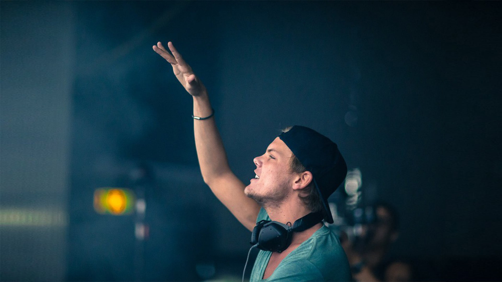
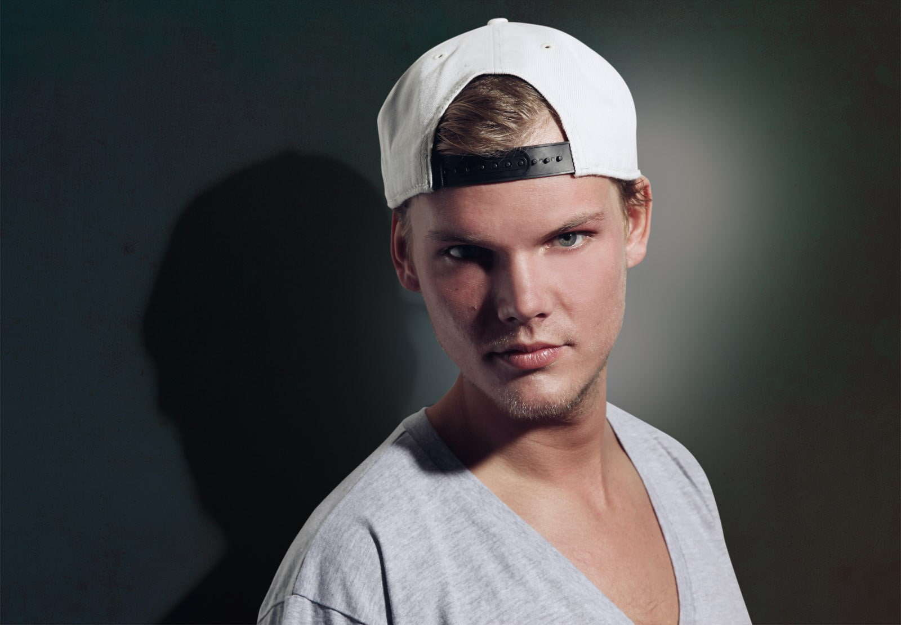
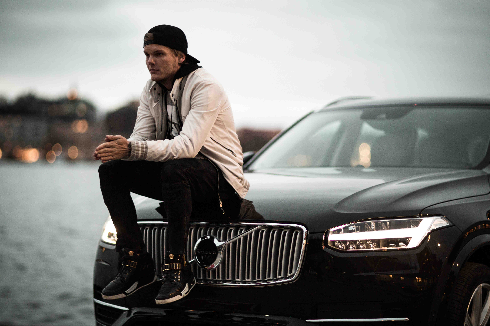
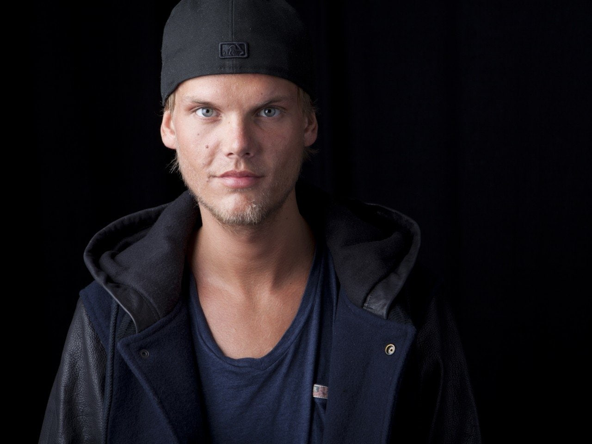
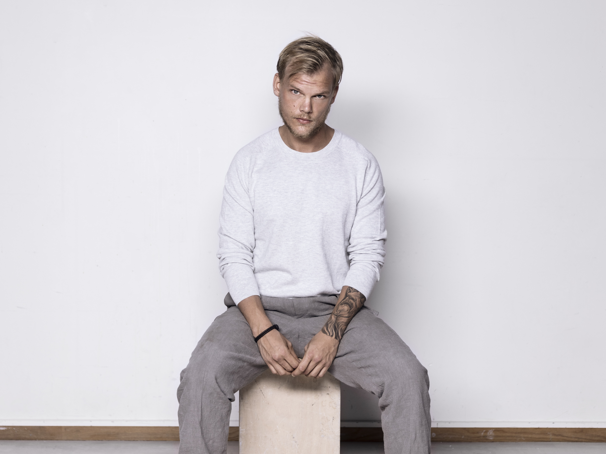
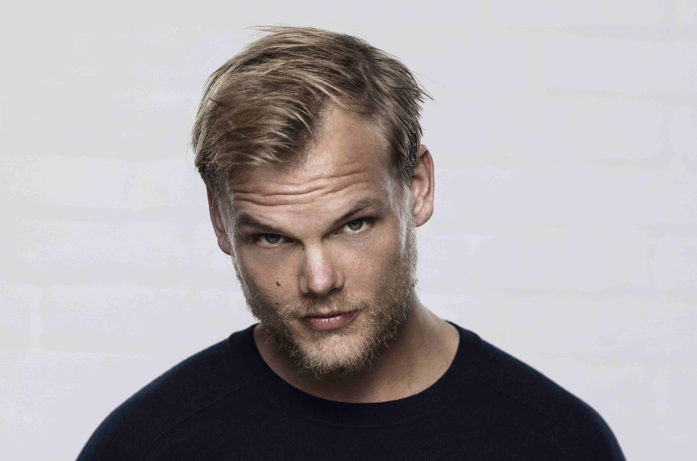
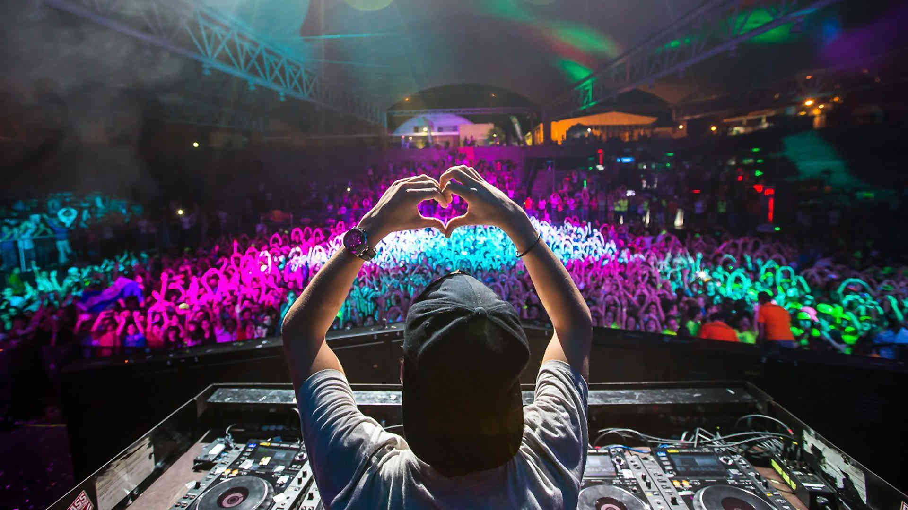
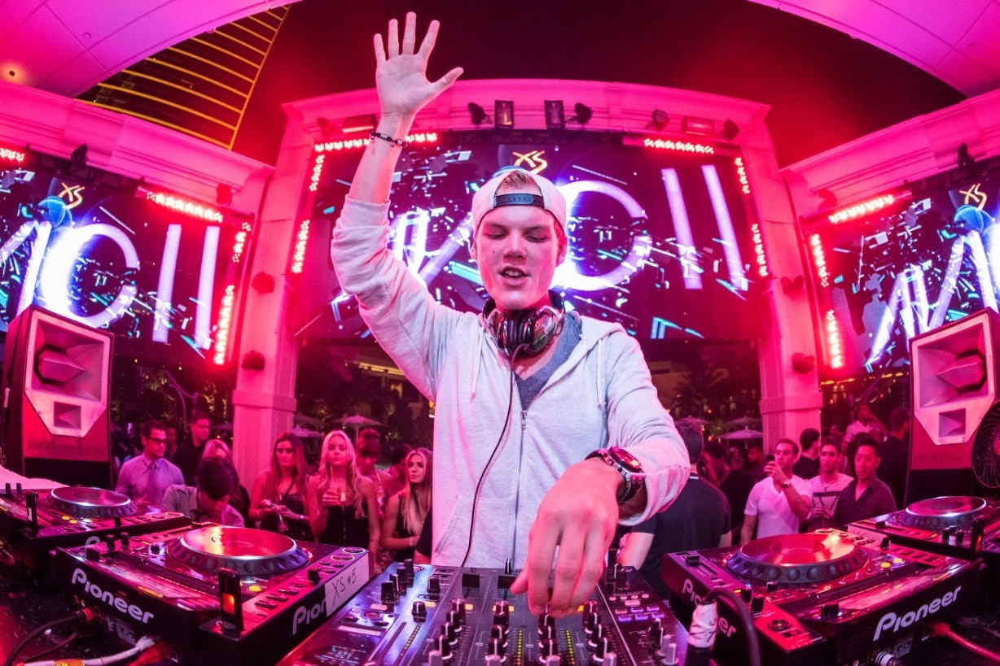

Tim Bergling, better known by his stage name Avicii, he was a DJ and composer Swedish,
specializing in audio programming, remixing and producing records.
Tim Bergling
The history of legend1989-2018
Time line
1989
Was born in Stockholm, Sweden, the son of Klas Bergling and actress Anki Lidén.
2007
Signed with the Dejfitts Plays label.
2010
Released the hit song "Seek Bromance", which reached the top 20 in several countries,
including Belgium, France, Netherlands, United Kingdom and Sweden.
Signed with the European A&R team with EMI Music Publishing.
2011
Launched "Levels", penetrating the mainstream.
2012
Her David Guetta collaboration song "Sunshine" was nominated for a Grammy Award in
the category of Best Dance Recording.
At the Ultra Music Festival in Miami, he premiered two songs, "Girl Gone Wild" (Avicii's UMF Remix)
with Madonna and "Superlove" with Lenny Kravitz.
Released "Silhouettes" The song featured the vocals of Salem Al Fakir and peaked at # 5 on the 46 UK
dance charts and #4 on the Billboard Hot Dance Club Songs.
Released "Dancing in my head" (Avicii's 'Been Cursed' Mix) on Beatport. The track features
Eric Turner on vocals.
Made history as the first DJ to headline the world-famous Radio City Music Hall in New York.
Launched the Avicii X you project, a partnership with Ericsson.
2013
Announced and released many new tracks from his new album True.
Along with former members of ABBA Björn Ulvaeus and Benny Andersson, composed the song for the Eurovision Song Contest 2013.
DJ Mag Top 100 DJs list was announced, with Bergling ranking No. 3 on the list.
Won his first "Best Electronic" award at the MTV EMAs.
Released her fourth single from the album, " Addicted to You, " which reached number 5 in Australia.
Debuted her new track “Dreaming of me,” voiced by Audra Mae, through episode 19 of her LE7ELS podcast.
2014
Released a remixed edition of his album True titled True: Avicii By Avicii that contained remixes of
all songs, excluding "Heart upon my sleeve" for unknown reasons.
FIFA and Sony Music Entertainment announced that Bergling will collaborate with Carlos Santana,
Wyclef Jean and Alexandre Pires for the Official Anthem of the FIFA World Cup entitled "Dar um jeito (We will find a way)".
Released his single "Lay me down".
Also produced and collaborated with Chris Martin of Coldplay, co-writing and co-producing
the song "A Sky Full of Stars" of the sixth studio album by the band, "Ghost Stories".
Also worked with Wyclef Jean on a single titled "Divine Sorrow" for the Haitian singer Clefication's upcoming album.
"Lose Myself", a collaboration between Bergling and Chinese singer Wang Leehom, was launched.
2015
Released his version of the song "Feeling Good" by Nina Simone, composed in 1964 by English composers
Anthony Newley and Leslie Bricusse.
Showed his song "I'll Be Gone" through episode 422 of Tiësto Club Life Podcast which has
an instrumental very similar to "Liar Liar (Avicii by Avicii)" although with different voices and chord progressions.
Released another single from Stories, "Waiting for Love". The track was co-produced by
fellow DJ and producer Martin Garrix and featured vocals by Simon Aldred of Cherry Ghost.
2016
Coca-Cola had partnered with Bergling for a global campaign anthem "Taste the Feeling" featuring Conrad Sewell.
Once again teamed up with Coldplay to co-produce the band's single "Hymn for the Weekend", which was released
as the second single from their album A Head Full of Dreams.
Announced that he was working on a third studio album.
2017
Announced a documentary directed by his close and long time collaborator Levan Tsikurishvili,
titled Avicii: True Stories.
Released "Ghost", a collaboration with Swedish singer-songwriter Daniel Adams-Ray, who was credited as HUMAN.
Released the six-track EP Avīci (01).
2018
Died on 20 April 2018 near Muscat at the age of 28. No cause of death was immediately given.
On 21 April, the Omani police stated that there was "no criminal suspicion" or evidence of foul play in Bergling's death;
he committed suicide using a glass shard to cut himself.
2019
It was announced that the album Tim, which Bergling was working on before his death, would be released with the first single, "SOS"
It was announced that an official biography of Bergling, written by Måns Mosesson, would be released in 2020.
A second single from the album, titled "Tough Love", was released.
"Heaven" was the last single to be released from the album. The track was co-written by Coldplay's lead singer Chris Martin.
2020
Another posthumous single by Avicii was released: "Forever Yours", which is a collaboration with Kygo and Sandro Cavazza.
The song was previously performed by Bergling during his final tour in 2016.
2021
It was announced that the biography would be titled Tim – The Official Biography of Avicii.
Gallery

Avicii

Avicii

Avicii

Avicii

Avicii
Avicii

Avicii

Avicii
Videos
Wake up
Waiting for Love
The Nigths
Addicted To You
I don't know if I did it right or wrong, I just did what seemed right to me at the time.